The Cloud and You
By Michael J Rees
Text copyright (c) 2014 Michael J Rees
All Rights Reserved
To Margot for her constant support
I am a retired academic who has spent 40 years teaching and researching computer science. More than 15 years ago I attended the 7th World Wide Web Conference in Brisbane, Australia. I saw a demonstration of a web browser showing a page that allowed the user to edit the page content directly in that browser. I was well and truly hooked.
This was my introduction to what became known as Web 2.0. Later still we called it AJAX after the mix of technology used. Then the marketers started calling it The Cloud. Back in the 1990s though we always drew the Internet as a cloud shape in diagrams. It's not surprising, therefore, that the Cloud has become a metaphor for the Internet.
Today when talking about the Cloud we mean the process by which people access software, computer processing, and files over the Web, instead of on their desktops. Over those more than 15 years I have reveled in the Cloud, using it for both professional purposes and in my everyday life.
As you might guess I use the Cloud for very many things but to give you a flavor my uses include:
When I praise the Cloud to my friends and colleagues I am often asked "What is the Cloud and why is it so useful? I dedcided to answer by creating an online course, from which this ebook has been created. In a couple of hours of your time you will learn about the main features of the Cloud and how you, too, can use it to accomplish everyday tasks.
No matter whether you are an individual, a professional or work for a company, I hope you enjoy what you read here, especially if you complete the practical workshops included in this book. It's all about the Cloud and you.
This course introduces the Cloud and how it relates to you in your everyday life.

Many of us have access to a range of devices such as:
All these devices are capable of connecting to the Cloud to bring us a wide range of facilities as we conduct our daily lives.

Your device you must be connected to the Internet to access the Cloud.
The Cloud features are managed by a very large set of servers numbering in the millions operated by a large range of companies big and small.

Servers are specialized computers containing processors, local memory and fast network adapters to connect them to the Cloud.
For the sake of efficiency large collections of servers are typically housed in data centers.
Software running on the servers provides a large range of useful services to the user devices connected to the Cloud.
Often large, coordinated groups of individual servers work together to provide the Cloud services

Probably the most widely used service today is secure Cloud storage for documents and data of all kinds.
High capacity disk drives are present in very large numbers housed alongside the servers in the data centers to provide this vital Cloud storage service.
Once stored in the Cloud documents and data can be accessed from any device connected to the Internet given the correct security credentials.

The good news is that the large scale of Cloud services and the increasingly convenient access to the Internet has driven down the cost of access.
Enterprise users have been able to access the Cloud for some time, but this course focuses particularly on how individuals, professionals and small businesses can gain benefits from the Cloud.
I look forward to explaining how the Cloud and You can work together.
Now you are familiar with the main Cloud components let's see how to connect with the Cloud. On all the devices mentioned so far you can run a web browser to connect with the vast majority of cloud services.

It's a simple matter of entering the address of the cloud service into your browser's address field.

Remember the Web and the Internet are quite different things

The Internet is a network of networks connecting devices with unique Internet Protocol, IP addresses. It allows data to be exchanged between, say, your smartphone and a Cloud server.

In contrast the Web uses HyperText Transfer Protocol, HTTP, to communicate between the browser on a device and a specialist Web server in the Cloud.
Here we see two of the most popular Cloud storage services, Google Drive and OneDrive from Microsoft. Google Drive is being used on a tablet and OneDrive on a laptop.

Cloud service will usually detect the browser and device and alter the displayed contents accordingly.

To make the interface more convenient many Cloud services provide dedicated apps. On the left is a dedicated smartphone app for OneDrive. On the right we see the same OneDrive account being displayed in a browser on a smartphone.
To enable dedicated apps, most professional Cloud services offer an alternative to browser access called an API or Application Programming Interface. This is an acronym you will see often in connection with the Cloud. An API is used by apps running on a device to access the specific Cloud service. All apps that share data between devices or other users will make use of the Cloud, and as such can be called Cloud apps.

Of course where data and files are shared there is the need for an access authorization system. Typically a user name and password security system is used to grant you access to your Cloud data, and for you to control data sharing, if needed.
In summary, connecting to the Cloud is as simple as typing an address into a browser or running a special app on your device. A system of user names and passwords makes access to the Cloud secure.

Now you have an overview of the main Cloud components let's look at the question of why the Cloud is so useful.
Put simply there are three compelling reasons:

Let me look at each one in turn.
I have mentioned the large range of different Internet-connected devices that can access the Cloud. They literally number in the billions so wherever you are on the globe you can use your own or someone else's device for access.
The browser or Cloud app can detect the device type and show content to accommodate the screen size and touch interface. Since browser access is immediate the Cloud service can always display the latest version. There is no need for the continual and often annoying process of downloading and installing updated versions of apps.

You can think of the Cloud as a single location, even though the services, documents and data are likely to be spread across different servers in different data centers possibly even in different countries.
To you the Cloud is a single, albeit nebulous, place. As such it is well named.
The distributed nature of the servers and disk storage also gives us security against data loss. Providers of Cloud services deliberately keep multiple copies of your documents and data. At the same time this affords a backup service and protects against hardware failure.
The Cloud gives you access to your own documents and data from all your devices. This is device sharing. In addition most Cloud services also allow you to share access with other people you specify, or even make your documents and data accessible to all.

Granting read access allows you distribute information to all and sundry. You become your own publisher. Most powerfully of all is when you grant edit access to others as they can then share the information creation process with you. Teams and organisations find shared editing a vital tool particularly with customers.

To obtain the major benefits I listed you must change your approach to computing. You should no longer be tied to a particular computing device at home or work where your data is stored by apps you have to download and install. Sadly it is probable you rarely, if ever, backup these particular computers. Even if you back up consistently you are no longer tied to backing up your documents and data and storing the backups in a single remote location. Instead you can perform your computing tasks and access your documents from any of your devices connected to the Cloud. Backup comes for free.

I have listed the considerable benefits of the Cloud, but as always these come with some associated risks.
You must understand the potential pitfalls in order weigh up if the Cloud is for you at the end of the day.

Again being brief there are three significant pitfalls:
Let me look at each one in turn.

You must access the Cloud via the Internet so you need an Internet connection for each transaction or task. However the connection does not have to be continuous. Indeed a browser only connects to the Cloud when it has a transaction to carry out.
For example when checking for email messages the browser connects and receives a list of messages. Only when the user wants to read, delete or send a new message does the browser connect again. If the Internet connection goes down then a delay occurs until it is available once more, annoying but the transaction recovers when connection is possible.
In many countries, with increasing availability of mobile phone networks and Wi-Fi, Internet access is becoming ubiquitous making the use of the Cloud more and more feasible.

Just as with Internet services there are many companies providing Cloud services both big and small. When you use free or paid Cloud services from a company you must judge the likelihood of their service being reliable and long lasting. Some small Cloud service companies have ceased operating, as have individual services from large companies like Google. All will give a lead time to allow you to copy your data to a competing service.
Many Cloud service providers are small startups who are eventually taken over by larger companies that either continue the service or provide similar ones. Individuals, professionals and small businesses in particular, should have a plan to switch Cloud services when there is a heavy reliance on one particular service. This is a major point of difference to locally installed software and data that will stay on a local computer even if the software is no longer updated and supported.
Security is the most common criticism heard against the adoption of the Cloud and there are two aspects, data transport through the Internet and data storage security.

Let's start with data transport between the device and the Cloud. By design Internet Protocol passes data packets through intermediate servers. Each server can keep a copy of the data packet and inspect its contents. Fortunately using secure HTTP, called HTTPS, data is encrypted as it passes through the Internet and arrives safely.
For data storage security we have to trust the Cloud service providers to encrypt our passwords and documents. Despite rare lapses today's commercial Cloud service providers offer a very high level of data storage security.
A third aspect of Cloud security that usually affects only large organisations is the geographical location of their Cloud storage. The location affects whether local law enforcement agencies can demand copies of documents and data stored in the Cloud. As well some government organisations are legally constrained to hold their data in their country of operations. If these are concerns you must only use a Cloud service provider that can guarantee the geographical security you require.

To summarise, there are some downsides to the Cloud:
Nevertheless in my judgment and experience the risks for individuals, professionals and small business are low enough to make use of the Cloud worthwhile.
Having covered the benefits and pitfalls of the Cloud I would like to mention a few of the more important Cloud services selected from the thousands available today.
Several of these Cloud services will be useful in your day-to-day activities.

As I mentioned, online email was the genesis of the Cloud, and many large companies offer Cloud email services. I show Outlook.com, a part of Microsoft's OneDrive, and the successor to Hotmail which was one of the first and largest of the email services. Other major competitors are Yahoo mail, Google mail and Apple's iCloud with a host of other companies in their wake. Of course, virtually every Internet Service Provider also gives their users access to web mail.

I will cover Cloud storage in later lectures but it is the next most important service after email. The very popular Dropbox is shown here. Like several competing services it offers storage for all file types with a generic file system user interface typical of Windows Explorer and Mac Finder. Dropbox runs across all the devices I have discussed, and provides the typical synchronization and backup capability expected of such services.

Storing media files like photos, music and video is just a special variant of Cloud storage. The features of the user interface experience in the browser are tailored to the different types of media involved. Here on Yahoo Flickr, a venerable site for storing photos, the features of the service for storing and sharing photos are extensive. This is a vey important photo service since Flickr now offers 1 terabyte of Cloud storage for free, that's a cool one thousand gigabytes!

Again I will cover Cloud office apps more fully in a later lecture. Most users today receive email attachments in popular document formats from Microsoft Office, particularly Word, Excel and PowerPoint documents. Being able to read and create these formats in the Cloud is a popular service. Microsoft offers Cloud app equivalents to Word, Excel and PowerPoint via OneDrive. Another major competitor in this space is Google Apps. Snippets of data like notes, addresses, images, screen dumps, voice narration and so on, are difficult to store cohesively and find again later. This has led to development of specific Cloud notes apps like the leader Evernote, and Microsoft OneNote.

A structured data repository is just a flowery term for a database resident in the Cloud where users can create and edit data records, and then search for them intelligently at a later date. The interface presented in the browser or Cloud app is carefully designed to be convenient for the type of data stored in the collection. I show the Diigo Cloud service used to store web links with associated labels and descriptions. Diigo goes much further allowing you to store whole web page content for reading later, annotating parts of pages and sharing any or all of this with other users. Academic references curated on Mendeley, and slide shows stored on SlideShare are a couple more common examples of structured data.
Online shopping and financial services are Cloud services I will mention in a later lecture. The list of services is still far from exhausted, but it would probably take a whole course to do justice to the full range of Cloud services. Suffice it to say there are few computing tasks that cannot be undertaken successfully in the Cloud. These days you would have to mount a special case to avoid the use of Cloud services.
Storage is one of the most popular Cloud services. I will describe the facilities in more depth. At the end of this section a short workshop takes you through the practical steps to establish and use your own Cloud storage, that is if you don't use it already.
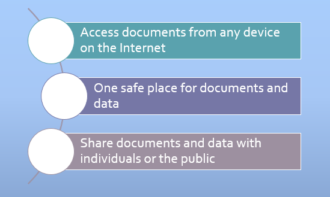Recall that Cloud storage mirrors the main benefits of the Cloud itself. You can access your documents and data files from any Internet-connected device. The Cloud provides a single, safe place to store your documents. Once in the Cloud your documents are private by default but can also be shared with others, either specific individuals or the public.
Here I show some files and folders in an example DropBox account. DropBox has been operating successfully since 2007. Each free account comes with a relatively small 2 GB of storage space with the option to pay for much larger storage space. This is a business model adopted by all the major Cloud storage providers.
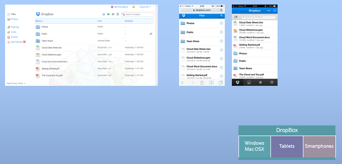DropBox has been available for several years and has a proven track record of providing a reliable service. The screen on the left shows DropBox running in a browser on a Windows machine. The pair of screens on the right are from a smartphone with the left side being from a browser and the right showing a dedicated DropBox app on the same device. DropBox is accessible from all the devices I have spoken about.
Two of the key attributes of Cloud storage are shown the diagram. The documents are accessible from any device on the Internet, and, the documents are stored in one place, safely backed up by the Cloud storage provider.
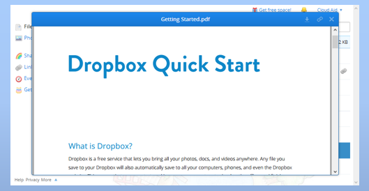All the previous screens are examples of displaying the list of files stored in the Cloud. For common file types, by clicking or touching a file name, the contents will be downloaded and displayed on the device. Here we see a PDF file being displayed. For special file types, we are prompted to download the file to the device as long as there is enough storage space available.
On laptop operating systems with a visible file system the Cloud storage providers make available server apps that run in the background. These apps synchronize documents between a local folder and the Cloud storage. Any changes to the documents such as creation, deletion or update are quickly synchronized.
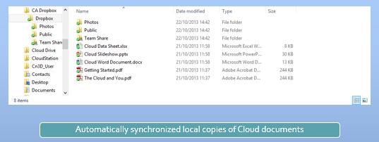This means that you always have a synchronized copy of all your Cloud documents on your laptops and desktops. Two major benefits are present, firstly you have one or more local backups of your Cloud documents, and secondly your documents are the latest versions on all devices.
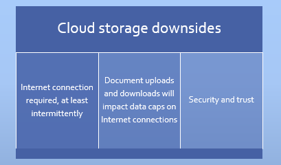Again there are some inevitable downsides. An Internet connection is required at least on a reasonably intermittent basis. The document upload and download to maintain synchrony requires high bandwidth especially for large documents. This will impact any data caps on your Internet service and will be particularly noticeable for Internet connections using mobile phone services. And you should know by now that any Cloud service always has to consider security and trust issues before using the service.
Once again, I and millions of other users will testify to the benefits of Cloud storage outweighing the pitfalls. DropBox has over 200 million users currently. Remember with Cloud storage wherever you travel your documents go with you even if it is just from one of your devices to another. As well as DropBox also look at other prominent services such as:
These free space limits will generally increase over time.
Let us go into a little more depth on how to manage your Cloud storage. Once you commit to the Cloud it should be second nature to store and share your documents and media files in your Cloud storage services. I deliberately use the plural because you will probably end up using at least a couple of Cloud storages.
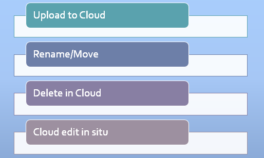As with any file system the Cloud document management tasks are:
Increasingly, Cloud storage services are offering the ability to edit certain types of documents within the browser or dedicated app running on the device. This avoids the need to download the document, edit it with a special app, and upload it again. I am sure we all look forward to seeing more and more sophisticated, in situ editing of Cloud documents in the future.
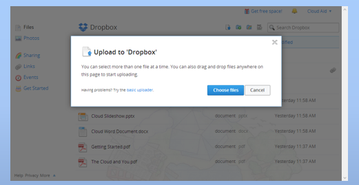It is usual to start with an existing collection of local files stored on your various devices particularly laptops and desktops. These files must be uploaded to your Cloud storage. Although in most cases some intelligent compression is used, it is best to assume uploading 1 GB of files will consume 1 GB of the data cap for your Internet service.
Trigger the upload at quiet times in your Internet use, especially if a group or family shares your connection. I tend to leave the upload to a couple of days before my monthly data cap renews, when I know I have some spare capacity and will otherwise lose it.
The simple way is to upload directly from a browser. Most browser uploaders now allow you to select multiple files and whole folders to make uploading more convenient. Often you can just drag large selections of files or folders into the browser dialog as shown here. On a laptop with synchronization running, you just copy the files into your local Cloud folder and the synchronization app will then begin to upload files to the Cloud.
Having selected a file in your list, DropBox will expose a set of file management options including delete, rename, duplicate, download, and move to a different folder. New folders can be created and renamed. A significant feature of DropBox is versioning which allows you to return the file to any past version as we see in the lower window. This is very useful when you delete large portions of a file. These lost contents can always be recovered.
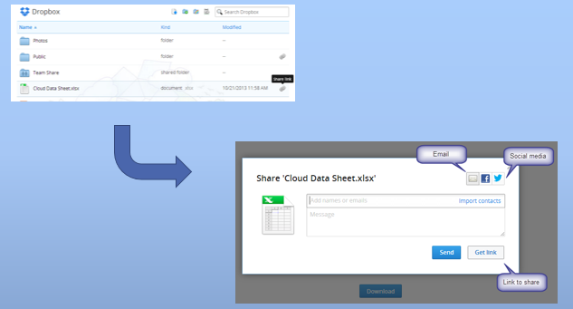Sharing your Cloud document with others is a very important and unique benefit of Cloud storage. DropBox allows you to share whole folders, too.
When you click the sharing link in DropBox a number of sharing options appear. You can fill in the email address and message and send a message with the document link included. This allows you to kiss goodbye to attaching physical copies of documents in emails.
Email though is regarded as so last century, and many users will prefer to share documents such as photos and videos, in their social media updates. DropBox provides for Twitter and Facebook as you see. A third option copies the shared document link to the clipboard and allows you to paste that into a web page, a chat box, SMS text or other social media sites. Your recipient just clicks on this link to read your document, see your photo or video, or listen to your music track. This is the power of the Cloud coming to the fore.
There are a couple more features in DropBox that you will meet in the workshop.
Although it more than meets the needs of Cloud storage document management at present DropBox does not provide in situ editing of documents. This is the domain of the Cloud Office apps which I cover in a later section. Now is the time for you to gain practical experience with Cloud storage in the workshop to come.
The steps in this workshop take you through setting up an account on Dropbox, uploading some documents and performing some management tasks on those documents. You then explore access from multiple devices if you have them available. Finally you share a document and retain its link for use in a later survey.
Carry out the initial steps on your own laptop if possible to obtain the maximum benefit of the local document synchronization.
Note that the last section in this workshop asks you to copy a sharing link to a Dropbox photo or image to the clipboard in preparation to pasting the link into an answer field of a later survey.
If you are using a computer in a public place like a library, Internet cafe or student lab then you can still do the majority of the workshop in the Cloud without the local synchronization features. You can still complete the survey.
If you already use Dropbox on your own laptop or desktop skip the sections that do not apply. Hopefully you still might learn some features of which you are not aware.
If you already have a Dropbox account skip this section.
When creating a Dropbox account in order to complete this workshop bear in mind you may become a permanent Dropbox user, so use a sensible name and a valid email address, which becomes your Dropbox account name.
Make sure you are logged in to your Dropbox account in a browser. Even on a public computer there will be files that you can upload, or you may have a USB drive plugged in with your own files stored.
Note that you can upload whole folders via the mechanism, and, if you have the Explorer or Finder open in another window, you can just drag files or folders into the upload dialog to trigger the transfer to Dropbox.
A recent addition to Dropbox introduced special handling for photos.
Note that as with any document you can Rename and Delete any of your documents and photos.
Sharing is one of the most important reasons for using Cloud storage like Dropbox. You can access your Dropbox documents from the browser from any device, your own devices and any other device you can access. Perhaps more important still you can share any of your documents or folders with other people.
This sharing process is a particularly good method for distributing photos and videos without having to attach copies to email, for example.
If you upload an updated version of a document that already exists in your Dropbox files then the old version is saved and is replaced by the new upload.
Dropbox therefore retains all the document changes as you work on different versions.
You can only do this section if you are running on your own laptop or desktop computer. Skip this section if you are using a public computer.
Events: The Events link on the left of the Dropbox files list shows a complete log of all the activity that has taken place in your Dropbox account since it was created. You can limit the list to a particular date and narrow it down to your shared folders as well. This last feature allows you to monitor team activity on a shared folder.
Get more space: Clicking on the Get free space link shows you ways you can either purchase more storage space or accumulate free space by spreading the word to friends via email and social media.
In a later survey a question will ask you to enter the link of one of your photos/images you uploaded on Dropbox in one of the steps above. Use the Get link feature to copy the web link to your clipboard in readiness to paste into your survey answer.
In this section I describe Cloud Office apps, the current pinnacle of Cloud services. By Cloud Office apps I mean sites that allow you to create and edit documents in the common Microsoft Office formats such as Word, Excel and PowerPoint. All processing is done in the Cloud without the need to install local Office apps on your devices.
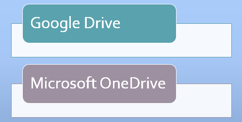I am going to cover Google Drive in this lecture and Microsoft OneDrive in the workshop You won’t be surprised to learn that both Google Drive and OneDrive also offer Cloud storage services to store the Office documents. As such they form a useful comparison to Dropbox in the Cloud storage services area.
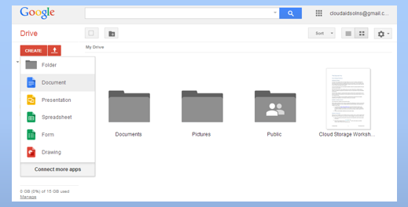With a Google account, a Gmail account for example, you go to drive.google.com to access your Google drive. There you see a list of your documents in the Cloud with the usual abilities to upload, manage and share them. Google Drive adds powerful features to create new documents, spreadsheets, presentations and drawings. Drive uses its own proprietary format for documents but is able to import and export the standard Microsoft formats for Word, Excel and PowerPoint.
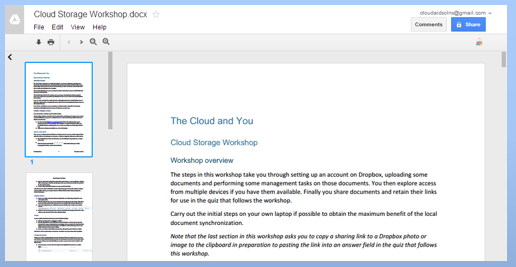Here we see the Cloud storage workshop document which I created with Microsoft Word 2013. I uploaded this document to Drive and Google is able to store and display it correctly. Drive can also rename, move to a folder, download and print this document. Because the document is in Microsoft .docx format, it cannot be edited by Drive until it is converted into the special format used by Google.
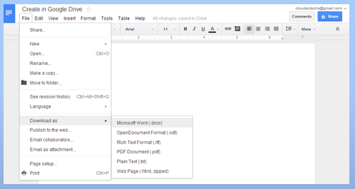In contrast a Google document created in Drive has full editing capability within the browser and allows fairly sophisticated documents to be prepared. Drive then offers an extensive range of formats in which to download this document. In the list the .docx and PDF formats are probably the most useful.
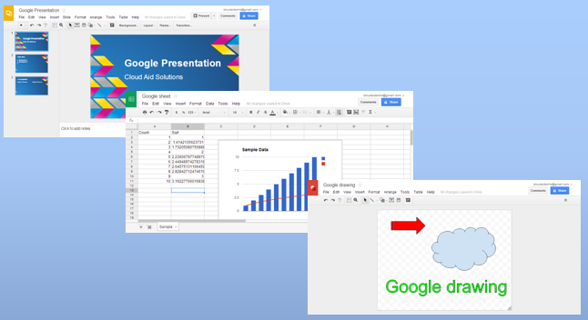The same holds true for Google Presentations, Sheets and Drawings. All these Google Office apps offer an increasingly extensive range of editing features, and all can export documents in the equivalent Microsoft Office format.
The steps in this workshop take you through setting up a Microsoft account, if you don’t have one already. Then you will use OneDrive to create some Office documents in the Cloud. You can share these documents amongst your devices and other users.
Carry out the steps on your own laptop or desktop if possible to obtain the maximum benefit of the local document synchronization.
Note that the last section in this workshop asks you to copy a sharing link for a document to the clipboard in preparation to pasting the link into an answer field of a later survey.
If you are using a computer in a public place like a library, Internet cafe or student lab then you can still do the majority of the workshop in the Cloud without the local synchronization features. You can still complete the survey.
If you already own a Microsoft account (like Hotmail) skip the sections that do not apply. Hopefully you still might learn some OneDrive features of which you are not aware.
If you already have a Microsoft account skip this section.
When creating a new Microsoft account in order to complete this workshop bear in mind you may become a permanent OneDrive user, so create a sensible Microsoft email address. I recommend you chose something like myusername@outlook.com.
Note this Cloud service combines, email, contacts (People), calendar as well as OneDrive which itself provides Cloud storage and Office apps which are called Office Online.
The OneDrive Cloud storage uses folders in the conventional way. When you login to OneDrive you are positioned at the top level folder called something like Fred’s OneDrive. To create a folder:
Once the new folder is created click on its name to be positioned within that folder. Its name and a breadcrumb list like Fred’s OneDrive > Office Documents will appear.
Position yourself in the folder of your choice and decide on a document to upload. Even on a public computer there will be files that you can upload, or you may have a USB drive plugged in with your own files stored.
Note that you can upload multiple files but for folder management you use the Folder actions menu:
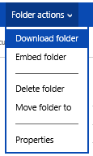Clicking on one of your uploaded Office documents will take you to the appropriate Office Online App. [If your computer has a local installation of Office you will need to click on EDIT DOCUMENT and select Edit in Word Online.] The document opens in the browser and presents you with a significant set of editing tools in the familiar ribbon layout. This workshop document was prepared with Microsoft Word 2013 on a desktop, and after upload to OneDrive further editing can be carried out:
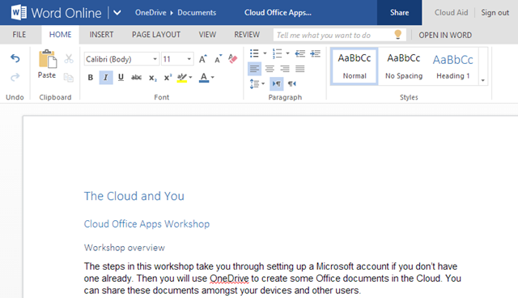Note you can always navigate back to the OneDrive files by clicking the OneDrive link in the breadcrumbs.
To create Office documents in OneDrive click on the Create menu and select type of document you require:
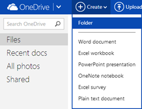You click on the SHARE link to share a link to this document in a dialog reminiscent of the equivalent in Dropbox you saw earlier:
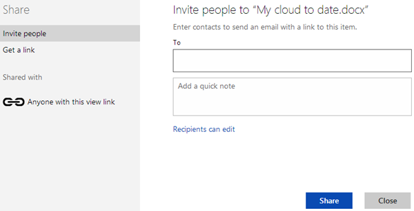You can share this document to various social networks and email a link with a message to your email contacts. Note you can even allow recipients to share the editing of the document. For now click on ‘Get a link’ and create a shortened View only link and copy it to the clipboard for later use in the survey.
Return to the OneDrive files list.
This section is optional but you can essentially repeat the process in the Excel Web App by creating an Excel worksheet and entering a few data values and a chart. Inspect the INSERT, DATA and VIEW menus to gain an impression of the range of editing actions.
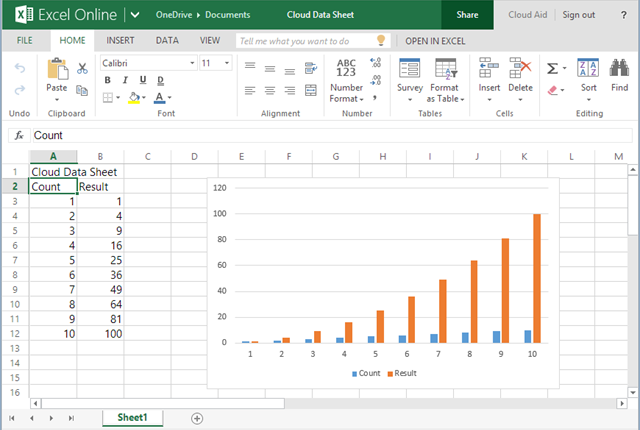Again optional, repeat the process of the last two sections by creating a PowerPoint presentation, adding a few slides, changing the theme, adding SmartArt and so on. Check the ribbon menus to see an impressive range of editing options taken from the desktop version of PowerPoint.
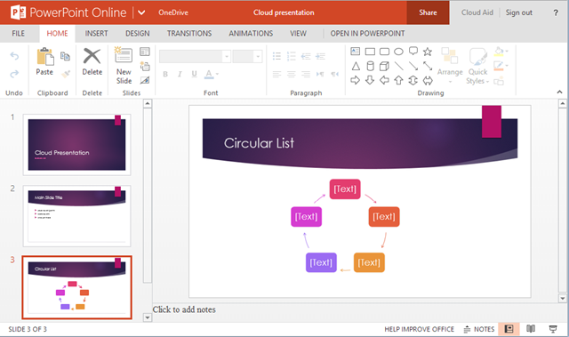OneNote: Try creating a notebook with OneNote Online. Although not as popular as Evernote you will find OneNote every bit as versatile, and an excellent place to store and later search extensive collections of notes and media of all kinds.
Local file synchronization: Just like Dropbox you can download the OneDrive server app and nominate a local folder to hold synchronized copies of your OneDrive files. Click on the ‘Get OneDrive apps’ link to download apps for Windows 7 and the Mac. Note that the OneDrive server is already built in to Windows 8 and OneDrive is completely integrated into Windows 8.1.
Smartphones and tablets: You can download dedicated OneDrive native apps on iOS and Android that link to your OneDrive documents just as with Dropbox and Google Drive.
Manage storage: Clicking on the Manage storage link shows you how much space you have left and provides options to buy more if needed.
A survey later in the course will ask you to enter the link of one of your Word document you created in one of the steps above. Use the Sharing feature to copy the web link to your clipboard in readiness to paste into your answer.
Having concentrated on just the most popular Cloud services I draw to a close by looking at other services. An exhaustive list in such a short course is not possible but it is important to give an impression of how extensive the Cloud has become.
To a greater or lesser extent I have covered off email, Cloud storage, collections of media files like photos, music and video, and Cloud Office apps. Let us look at the other services mentioned earlier.
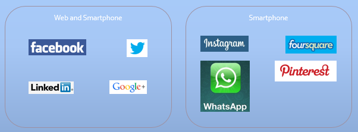By their very nature, social media sites are quintessential examples of Cloud services. Users of a social media site see content generated by themselves and a controlled selection of other users, referred to as friends. Content comes in many and varied forms and spans text, links, photos, audio and video of all kinds, as well as interactive content in the form of games.
It is the vast array of content that makes social media sites so attractive, so much so that we see social media starting to take viewing time away from other media like TV. Facebook, Twitter and LinkedIn are the big three social media sites. I am sure you a familiar with Facebook. Twitter supports short 140-character messages and allows one-way friendships – you can friend me but I don’t have to reciprocate. LinkedIn has become the professional social media network and is the place to establish your central resume, where employers and professionals go to assess your skills and experience.
Google is late to the game with Google plus and is finding traction with technically oriented people. Instagram shares photos amongst its users. Foursquare encourages you to share your checkins at locations of your choice. WhatsApp users pass messages to each other, and Pinterest simulates pinning and sharing your photo messages on a pinboard.
The only major concern with social media is how much personal information to impart and with whom. Avoid the inevitable peer pressure to share more than you intend.
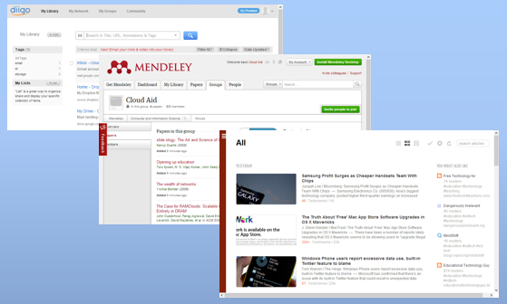Remember structured data collections are really online databases. These Cloud services allow you to create collections of data records specific to a task or topic. The data is either typed in manually or copied from the web or email.
The Diigo service collects web address links, bookmarks, and allows you to associate notes and tags and control sharing for each link. You can create folders to structure your link collection. Stored in this way the Cloud service can provide intelligent searching to find the data conveniently in the future. Being in the Cloud you can do this from any device.
Mendeley provides storage for references and can generate lists of citations. All references can be shared and Mendeley is invaluable for authors of professional documents.
The third window shows Feedly, which manages your collection of RSS feeds used by online news services and blogs. Feedly is essentially an RSS feed reader and provides a constantly updated list of only the new information from your chosen collection of news sites or blogs – in essence a 'river of news'.
I have just given a tiny sample of the types of data available. Whatever your interest you will find structured data collections to suit – movies, music, books, magazines, newspapers, sports, and so on.
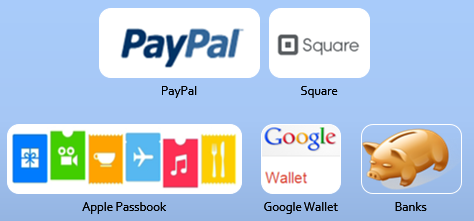Many of you will have been using the Cloud to access your bank accounts securely for many years. The banks have become expert in providing secure transactions via the Cloud, most recently on smartphones, too. But we are seeing the emergence of Cloud-only financial services.
Probably the biggest and most well-known is PayPal now owned by the Ebay online shopping company. PayPal allows money in a wide range of currencies to be transferred between any two users, individuals or companies, with PayPal accounts. A PayPal account is just an email address. If you know my address you can send me money, and vice versa, so much easier than dealing with bank accounts. However, the traditional banks do back up each PayPal user account with credit cards. PayPal though, can be used on any device via the browser or dedicated apps.
Google Wallet is less popular but offers many of the same features as PayPal. The Apple Passbook app, which is supported only on Apple devices, extends transactions from just money to tickets, vouchers and loyalty cards and other objects of monetary worth. Square is an interesting company that provides a small credit card reading device on your smartphone or tablet and allows you to accept a credit card payment anywhere. This company is also experimenting with a payment by email service even easier to use than PayPal.
Financial services in the Cloud are growing fast and threaten to overtake traditional banking services.
And the list goes on. I have not mentioned industries like travel, food and drink, entertainment, sports and the professional services of the law, education and government. All are offering Cloud services growing fast from small beginnings.
In these closing remarks I leave you with some parting thoughts. As I hope you now know, the Cloud is vast and I have only scratched the surface of what it can do for all of us.
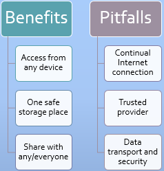These are the concepts I hope you will hold in your mind whenever you think about the Cloud, or other people seek your opinions about it. The three benefits are:
These are very significant benefits. But offsetting these are some pitfalls:
The continuing growth in availability and use of Cloud services points to the benefits outweighing the pitfalls. This is particularly true for individuals, professionals and small businesses. And by individuals I mean both young and old alike I believe you are never too old to use the Cloud.

For those of you who have used the Cloud already I hope you learned a few new facts of interest to you. For those of you new to the Cloud I hope it has encouraged you to begin using the Cloud for at least some of you computing needs. In relation to the Cloud and You I urge you to go forward boldly and Embrace the Cloud.
I prefer not to give static references to further reading as the developements in the Cloud are so frequent that such information is superceded well before a reader is able to follow up. Instead a link is provided to a Diigo list of references which are updated from time to time to reflect at least the significant changes to Cloud information. The dynamic references list can be found at:
The Cloud and You Links Collection
Cloud services and apps mentioned in this text can usually be found at a link such as http://www.cloudservice.com or by using a search engine with the Cloud service name.